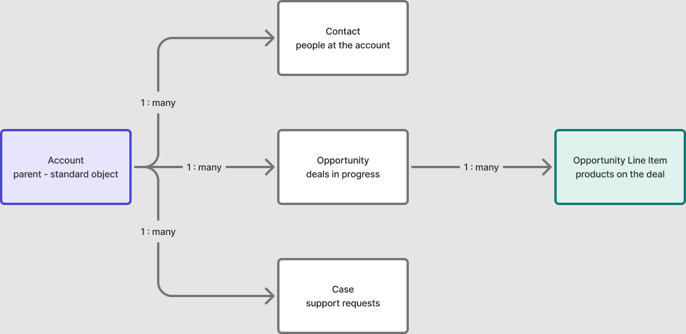

Learn Salesforce object by object, not slide by slide.
Free, plain-English study notes for the whole platform, from Objects and Fields to Security, Flow, Apex, LWC and Architecture. Then practise with real interview questions and a live code playground.
> SELECT Name, (SELECT Name FROM Contacts) FROM Account LIMIT 1 ✓ 1 row · 3 child relationships object Account (standard) children Contact · Opportunity · Case access Org-Wide Defaults + Role Hierarchy tracks Admin · App Builder · Developer >
Six pillars cover the whole platform
Every certification path and every real Salesforce org is built from the same underlying concepts. These are the pillars this blog organizes its notes around.
Platform & CRM basics
What a CRM is for, how Salesforce organizes records, and how to navigate Setup without getting lost.
Data model & relationships
How records connect to each other, and why the choice between relationship types shapes everything downstream.
Security & sharing model
Who can see what, and why. The layered model that decides record and field-level visibility across an org.
Automation, clicks not code
Building logic declaratively — the tools that let admins encode a business process without writing Apex.
Apex & development
When declarative tools aren't enough — writing and testing code that runs safely inside the platform's limits.
Architecture & integration
Connecting Salesforce to the rest of a company's systems, and moving changes through orgs safely.
How records actually connect
Almost every Salesforce concept — sharing, automation, reporting — sits on top of this one shape. An Account is the hub; Contacts, Opportunities, and Cases hang off it as child records.

A three-stage study roadmap
Work through the stages in order if you're starting from zero, or jump to the stage that matches where you're stuck. Each stage points to a certification that validates it.
Foundations
Get comfortable inside an org before touching automation or code.
Salesforce Certified Administrator ↗Developer & architect
Write code that respects the platform's limits, and connect Salesforce to everything else.
Platform Developer I/II · Architect tracks ↗Real Salesforce interview questions, with real answers
260+ questions across 16 topics, from Admin and Security to Flow, Apex, LWC, design patterns and Agentforce, each tagged Beginner, Intermediate or Advanced, plus scenario questions, coding exercises and cheat sheets. The kind that actually come up, not textbook definitions. Refreshed monthly.
Latest study notes
Short, worked explanations of the concepts that trip people up first — written the way I wished someone had explained them to me.
Objects and fields: the building blocks of Salesforce
Standard vs custom objects, the field types you'll use constantly, and why the schema you choose on day one is hard to undo.
Read the note →Profiles vs permission sets: when to use which
The two most confused tools in the security model, explained through what each one is actually for.
Read the note →Master-detail vs lookup relationships, explained
Cascading deletes, roll-up summaries, and the ownership question that decides which relationship type you need.
Read the note →Flow Builder 101: your first screen flow
A worked example building a lead-routing screen flow from an empty canvas, decision element by decision element.
Read the note →Understanding governor limits before you hit them
Why Apex fails in bulk when it worked fine in the debugger, and how to write triggers that don't care about record count.
Read the note →Reading a sharing rule like an engineer
Org-wide defaults set the floor, sharing rules raise it. A mental model for tracing why a user can see a record.
Read the note →Reports and dashboards: the parts nobody explains
Why a report type limits what you can build, and the "running user" setting that makes two people see different numbers on the same dashboard.
Read the note →Lightning Web Components vs Aura: why the switch happened
What changed under the hood, and why new development has moved almost entirely to LWC.
Read the note →REST vs SOAP: picking the right API for the job
Why most new integrations reach for REST, and the legacy enterprise cases where SOAP still shows up.
Read the note →
One study note a week, nothing else
Short, focused, worked examples — no product marketing, no upsells. Unsubscribe whenever.
Sent Tuesdays. One click to unsubscribe.
You're on the list — first note lands Tuesday.